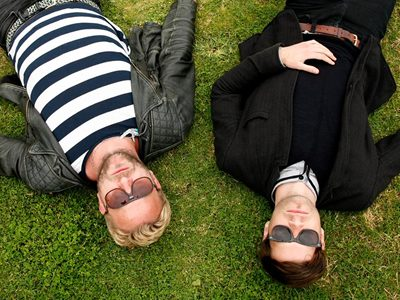

Psychemagik feat. Renegade - Black Noir Schwarz EP on Crosstown Rebels


The latest from the Crosstown Rebels stable brings a weapon that’s doesn’t fool around; nothing less than straight up in its appeal. UK duo Danny McLewin and Tom Coveney produce together under the Psychemagik alias, and with Black Noir Schwarz they’ve shaped a mainroom house number that’s built for the peaktime, and packing plenty of sex appeal.
Built from the ground up with some driving house percussion and a strong electro bassline, it’s a mainroom electro stomper that mixes in just the right amount of underground house grit.
There’s also a cheeky vocal hook courtesy of Renata De Sutter, though it’s slowed right down to comic effect, emphasising things aren’t to be taken too seriously. “Black, noir, Schwarz… these are the colours of my love for you.”
Tensnake steps in for a remix strips it back for a techier vibe, swapping the electro bassline for one that’s heavy enough to shake the walls; he keeps the accessible appeal though with a techy melodic hook, for what’s arguably the choice cut here.
Ex Audio Bully member Tom Dinsdale delivers a remix under his new Minéo alias, going for a slowed down funk approach.
Whichever of the three tracks you’re looking at though, fun is the focus and there’s no confusion as to either what’s being aimed for, or what’s achieved
***
Title: Black Noir Schwarz EP
Label: Crosstown Rebels
TracklistBlack Noir SchwarzBlack Noir Schwarz (Tensnake Remix)Black Noir Schwarz (Minéo Remix)
soundcloud.com/crosstownrebels
soundcloud.com/psychemagik
Our Rating: 7/10